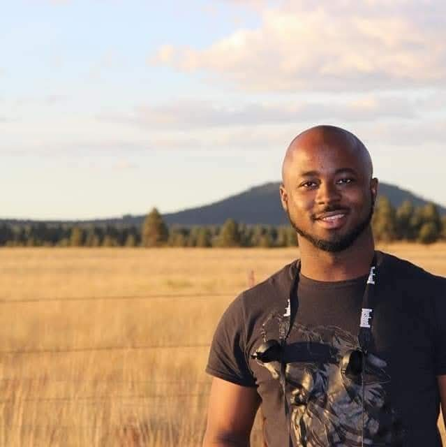

Home
I’m a Web Developer, IT Specialist, and devoted Computophile, driven by a deep passion for creating meaningful technologies—tools that simplify life, enhance productivity, and expand access to opportunity, particularly in education and underserved markets. My foundation in technical support and troubleshooting, combined with hands-on experience in Linux system administration, equips me to confidently maintain and optimize the digital environments that people depend on every day.
I am also well-versed in building and maintaining networks. About a year ago, I began developing web applications using JavaScript. With CompTIA Network+ and Fibre Optic Networking certifications, I am the kind of professional equipped to oversee complex infrastructures—delivering solutions that are secure, scalable, and thoughtfully executed. Whether through web design, JavaScript programming, or 3D printing and modeling, I enjoy bridging creative and technical disciplines to solve real-world problems.
Most recently, I completed an intensive eight-week program at MIT on Designing and Building AI Products. I have been actively building and prototyping innovative solutions since. My vision is to become a leading force in AI product development, applying my skills to create impactful technologies tailored to the needs of emerging economies. I’m especially passionate about using technology to improve education and infrastructure—empowering communities and unlocking their full potential. I believe innovation must always serve humanity—and that technology is at its best when it brings people together.
Core Commitments
- Building green computer products that minimize environmental impact
- Designing efficient energy systems to power the future
- Creating robust, modular energy-computer systems for decentralized resilience
- Using crypto technologies to solve real human problems—everyday payments, digital identity, and secure record-keeping
- Constructing automated systems and economically helpful robots that reduce toil and enhance productivity
- Leading AI research with real-world applications at the core
- Building scalable networks that connect people, services, and opportunity
Vision
To be a global leader in ethical, accessible, and sustainable technology—developing AI-driven, energy-conscious, and modular systems that uplift underserved communities, empower individuals, and help humanity transition into a more just, connected, and sustainable future.
Mission
To build intelligent, automated, and ecologically responsible systems that:
- Improve education, energy access, and economic opportunity
- Deliver useful, locally adaptable technologies across emerging markets
- Combine the power of AI, clean energy, robotics, and web technologies to solve daily human problems
- Create a blueprint for community-centered innovation that is scalable and inclusive
Philosophy
Love, Togetherness, and Legacy.
We believe that every tool we build should come from a place of love—for people, for our planet, and for generations to come. Innovation without compassion is incomplete. We strive to create a world where cooperation is more powerful than competition, where we design with empathy, and where the impact of our work is measured not just by revenue, but by lives improved.
Together, we leave Earth better than we found it.